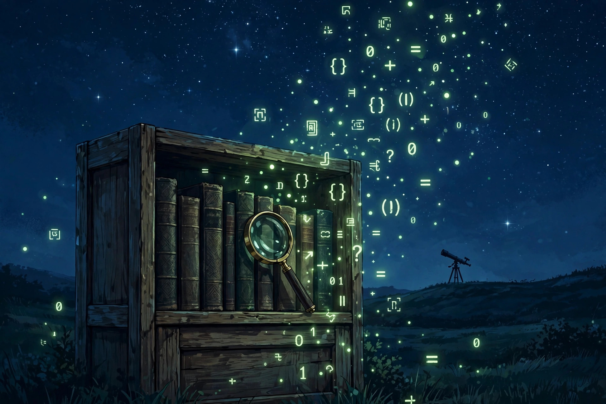

October 21, 2026
The Mystery-Lover's Bookshelf: Three Carl Sagan Classics

Illustration: The Discovery Wire (generated artwork for this story)
The Mystery-Lover's Bookshelf: Three Carl Sagan Classics
We spend our days staring at things nobody has explained yet — unreadable discs, unexplained signals, flashes from the young universe. Readers keep asking us where to start. Our honest answer: start with Sagan.
Here are the three we'd hand you first, in the order we'd hand them.
1. Cosmos (1980)
The book that taught a generation to ask questions about the universe. A companion to the landmark television series, Cosmos sweeps through 15 billion years of cosmic evolution — from the origin of life to the search for extraterrestrial intelligence — in Sagan's unmistakable voice: rigorous, lyrical, and never condescending. It remains one of the best-selling science books of all time.
Why it fits our page: this is the grand tour. Every mystery we cover — from fast radio bursts to second-generation planets — lives inside the universe this book maps.
2. The Demon-Haunted World: Science as a Candle in the Dark (1995)
Sagan's defense of clear thinking. This is his toolkit for telling real mysteries from manufactured ones — how to weigh evidence, spot baloney, and keep wonder alive without abandoning skepticism. In an era of viral "discoveries" and AI-generated nonsense, it reads more relevant every year.
Why it fits our page: our whole voice — curious, honest, zero hype — is basically this book's thesis. When we refuse to claim a solution we don't have, we're following Sagan's rule.
3. Pale Blue Dot (1994)
The follow-up to Cosmos, built around the famous 1990 Voyager 1 photograph of Earth as a mote of dust in a sunbeam. Part cosmic history, part meditation on our responsibility as a species, it's the book that turns looking outward into looking inward.
Why it fits our page: mysteries aren't just puzzles to solve — they're reminders of how much we don't know, and how precious the one planet asking the questions is.
All three are widely available at booksellers and libraries. Check your local library first — it's free.
Source: The Discovery Wire — read the original report
← Back to latest stories